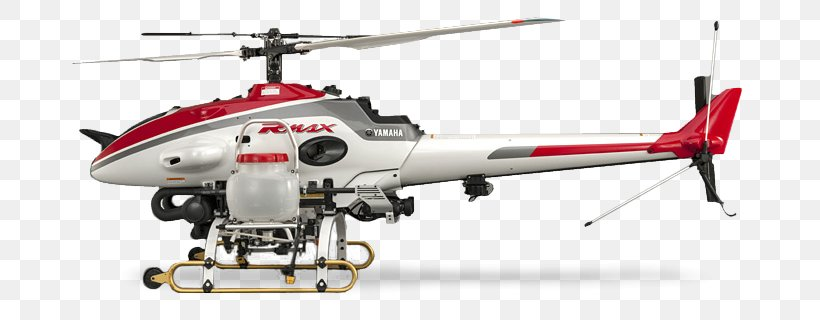

DJI Agras T20

XAG P30

Yamaha RMAX

DJI Agras MG-1

HSE-UAV RX-1400

XAircraft XAG V40
Os drones de pulverização são amplamente usados em culturas como soja, milho, arroz e hortaliças. Eles facilitam a aplicação eficiente de insumos, especialmente em áreas de difícil acesso, aumentando a produtividade e minimizando impactos ambientais.